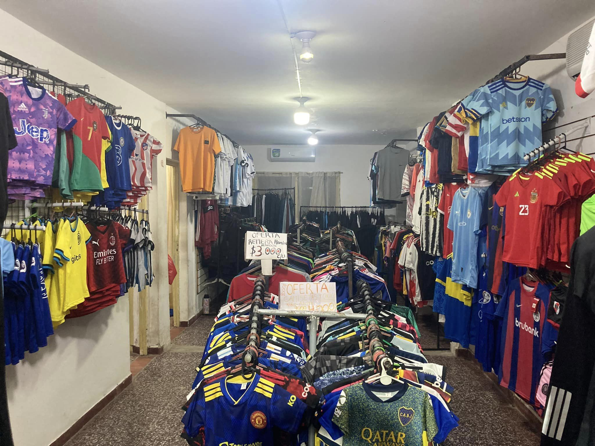
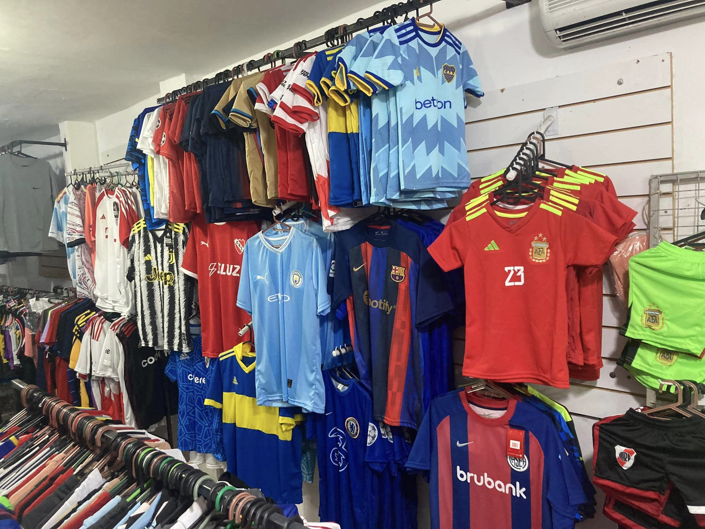
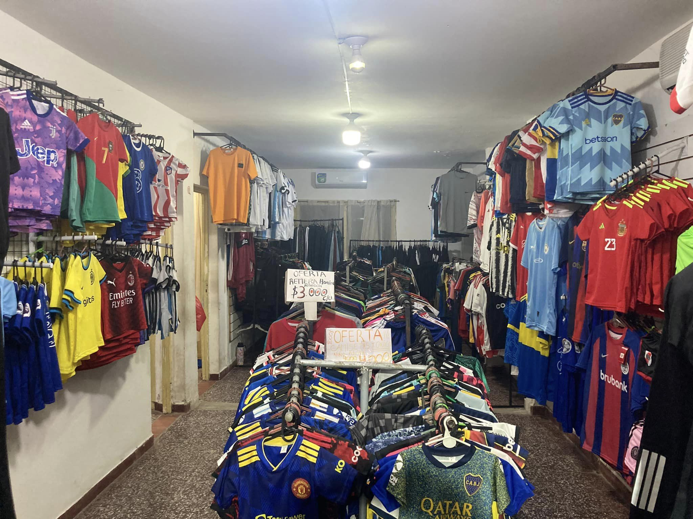
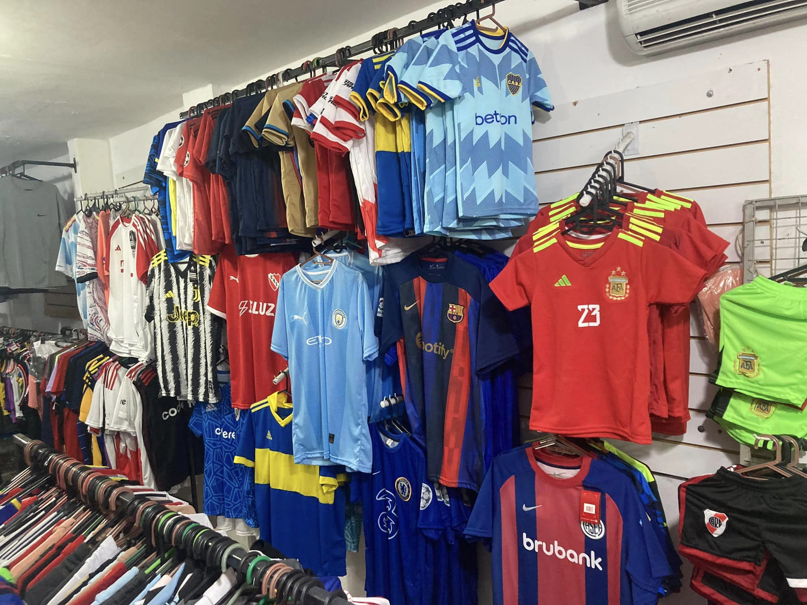

Cuestionario de Preguntas a la Tienda Código Urbano para la primera
ENTREVISTA
Fecha de la entrevista: sábado 6 de mayo de 2023 -- hora: de – 9 a 10 hs.
Encuesta realizada a los propietarios de la tienda: Sandra y Gerardo.
Dirección de la tienda: Belgrano 885
Preguntas y respuestas:
1 - ¿Cuánto tiempo lleva su tienda en el mercado y cómo ha evolucionado a lo largo del tiempo?
Nuestra tienda Código Urbano ha estado en el mercado desde 2017, y desde entonces hemos
evolucionado bastante. Hemos pasado de ser una pequeña tienda de ropa deportiva a ser una tienda
reconocida en la ciudad.
2 - ¿Cuál es la ubicación de su tienda y cómo funciona su estrategia de ventas?
Estamos ubicados en pleno centro de la ciudad de Formosa, en la calle
Belgrano 885. Nuestra estrategia de ventas se basa en ofrecer productos de calidad a precios
accesibles para apuntar a todas las edades posibles de clientes.
3 - ¿Cuántos empleados tiene actualmente en la tienda y cuáles son sus funciones?
Actualmente, en nuestra tienda tenemos cuatro personas encargadas, que son los dueños
(matrimonio), la hija mayor como encargada de ventas y el sobrino como ayudante de ventas.
4 - ¿Qué tipos de productos vende en la tienda y cuáles son?
Ofrecemos productos de ropa deportiva para mujeres, hombres y niños.
Tenemos una amplia variedad de ropas, calzados y accesorios para deportes como correr, gym,
futbol, básquet, natación, entre otros.
5 - ¿Cómo maneja la gestión de inventario y cómo se lleva el seguimiento de las existencias?
Aunque no contamos con un inventario automatizado de mercancías, realizamos un seguimiento
constante de nuestras existencias y solicitan reposición de mercaderías cada 15 días si es
necesario a proveedores.
6 - ¿Tiene un sistema de facturación en su tienda y cómo lo maneja?
Utilizamos la aplicación móvil de AFIP para realizar la facturación de la tienda.
7 - ¿Qué tipos de pagos acepta en su tienda física?
Aceptamos pagos en efectivo, tarjetas de crédito, billeteras virtuales y transferencias.
8 - ¿Tiene una lista de clientes y cómo gestiona la información de los clientes?
Mantenemos una lista de clientes que registramos en el WhatsApp de la tienda, y gestionamos la
información de nuestros clientes de forma cuidadosa y responsable.
9 - ¿Cómo se asegura de que la tienda siempre tenga suficiente mercancía?
Nos aseguramos de tener siempre suficiente mercancía mediante un seguimiento constante de
nuestras existencias y la solicitud de reposición de mercadería a proveedores.
10 - ¿Cuál es su política de devoluciones y cómo maneja los reembolsos a los clientes?
Ofrecemos una política de devoluciones en caso de avería o desperfecto, o si el cliente necesita
cambiar de talla.
11- ¿Implementan descuentos y Promociones?
Sí, implementamos descuentos y promociones en nuestra tienda de manera regular.
Además, tenemos precio diferenciado a clientes que realizan compras mayoristas. Con descuentos
dependiendo de la cantidad de productos que solicita.
12 - ¿Cuál es su objetivo Principal al implementar un sitio web de ventas en línea?
Nuestro objetivo principal al implementar un sitio web de ventas en línea es aumentar nuestras
ventas y alcanzar un público más amplio. Buscamos expandir nuestra presencia en línea y hacer
que sea más fácil para los clientes comprar nuestros productos.
13 - ¿Cómo se imagina el impacto que tendría el sistema de venta en línea en su tienda?
Creemos que el sistema de venta en línea tendría un impacto positivo en nuestra tienda,
permitiéndonos alcanzar un público más amplio y aumentar nuestras ventas de manera efectiva.
14- ¿Equipamientos informáticas con los que cuentan?
Contamos con:
- Un pc: HP 21.5" Full HD All-In-One Computer, AMD E-Series E1-
6015, 4GB RAM, 1TB HD, DVD Writer, Windows 10 Home.
- Smartphone
- Impresora
15- ¿Qué tipo de servicios adicionales brindan a sus clientes ejemplos: delivery?
Realizamos envíos a Domicilio dentro del casco céntrico sin costo de envió,
Fuera del casco céntrico y barrios alejados enviamos a través de moto mandados, el servicio de
envío lo paga el cliente, envíos al interior de la provincia a través de servicios de paquetería
lo paga el cliente.
Además, realizamos pedidos de mercarías o prendas en caso de no tener stock en el momento en el
que el cliente lo solicita.
Observaciones:
Los clientes exponen su preocupación por el constante aumento de precios de las mercaderías que
dependen por la suba constante del dólar lo cual influye directamente en el precio de los
productos de los proveedores y que constantemente tienen que remarcar precios de sus mercaderías
según cotización del dólar.
Están en constante búsqueda de distintos proveedores para obtener mercaderías a mejor precio y
calidad.
 


